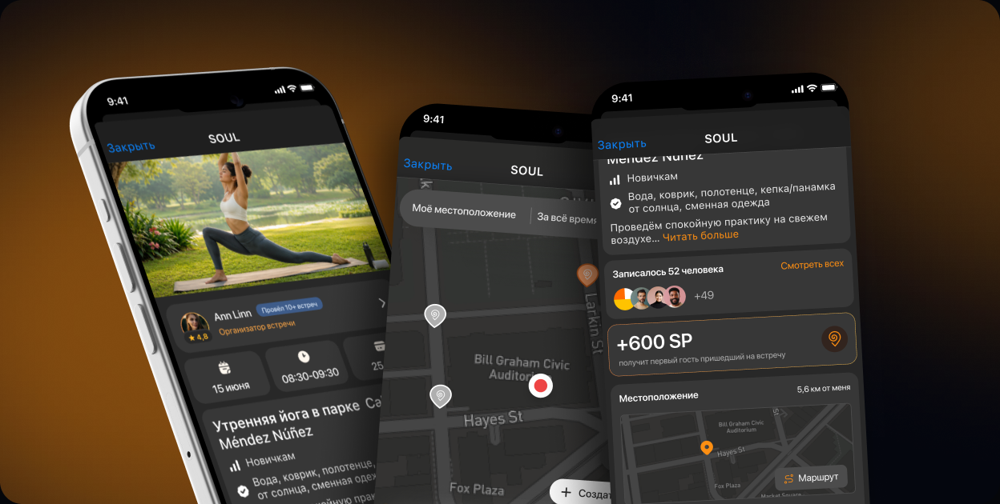
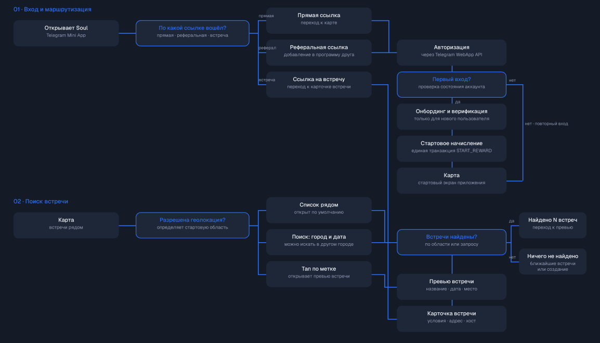
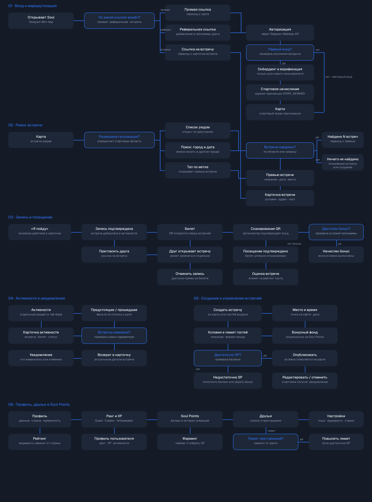
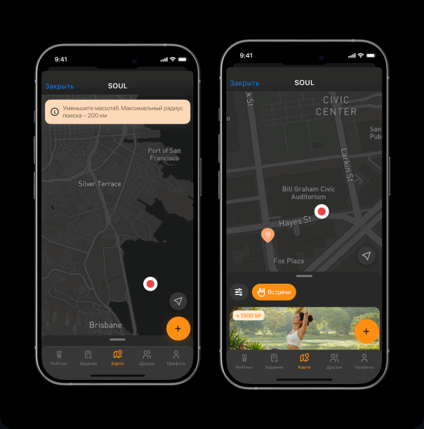
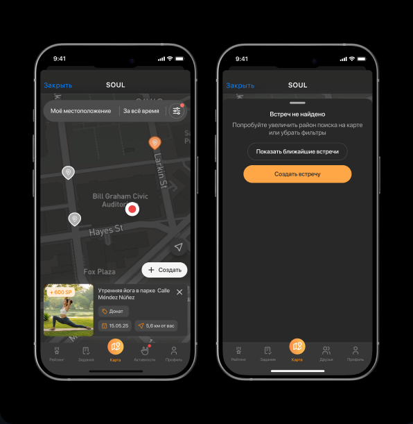
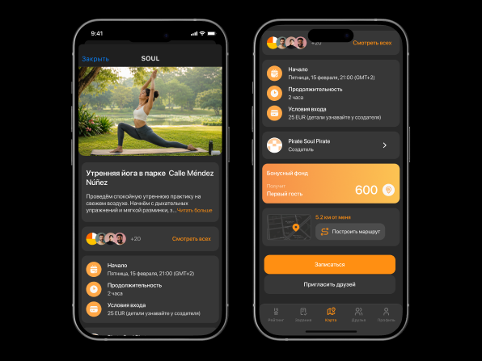
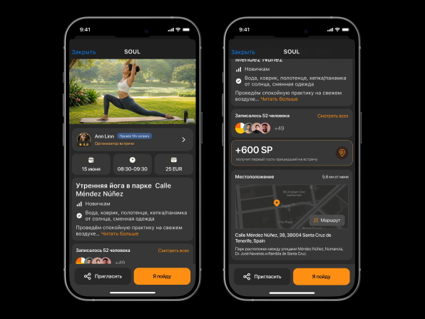

Продукт и аудитория
Soul помогает соло-путешественникам, экспатам, диджитал-номадам и новым жителям города находить живое общение через встречи рядом.
Как исследование помогло перестроить поиск и выбор встреч

На задачах поиска и выбора встречи наблюдала, где пользователи теряют контекст, какие условия понимают неверно и что мешает принять решение о записи.
Soul помогает соло-путешественникам, экспатам, диджитал-номадам и новым жителям города находить живое общение через встречи рядом.
Понять, где пользователь теряет контекст при поиске встречи и что мешает принять решение о записи.


Приоритизировала не отдельные дефекты интерфейса, а барьеры, которые мешали принять решение о записи.
Кнопка находилась внизу, адрес был разделён между блоками, а важные детали скрывались под «Читать больше».
25 EUR, 600 SP и «первый гость» не складывались в понятные правила участия.
У организатора не было подтверждённого опыта и оценок реальных участников.
Если вынести фильтры по месту и времени наверх, показывать превью по тапу на метку и различать метки по типу, пользователь сможет сравнить встречи прямо на карте и открывать детальную карточку осознанно, а не наугад.
Сравнивает варианты по расстоянию и типу до перехода в карточку — не тратит тапы впустую.
Меньше случайных переходов в карточку — выше доля осознанных записей.


Если собрать адрес, формат входа, бонус и подготовку в одном блоке вместо распределения по экрану, пользователь примет решение и запишется без возврата к длинному описанию.
Не прокручивает карточку в поисках ответа — все условия видны сразу.
Меньше отказов на этапе просмотра — решение принимается быстрее.


Разделила наблюдения, продуктовые гипотезы и будущие метрики, чтобы не выдавать качественные данные за рост конверсии.
Пользователи находили фильтры, сравнивали встречи через превью, понимали пустую выдачу и видели основное действие.
Рейтинг доверия снизит барьер записи, а создание встречи из пустой зоны поддержит рост предложения.
Успешность поиска, долю пустой выдачи, переход из превью в карточку и конверсию в запись.
Провела исследование, синтезировала и приоритизировала проблемы, перестроила два ключевых экрана, описала сквозной сценарий и согласовала ограничения поиска с разработчиками.
Исследование проведено на небольшой выборке; количественный эффект решений предстоит проверить на объёме.
Расскажу о проектах подробнее и отвечу на вопросы